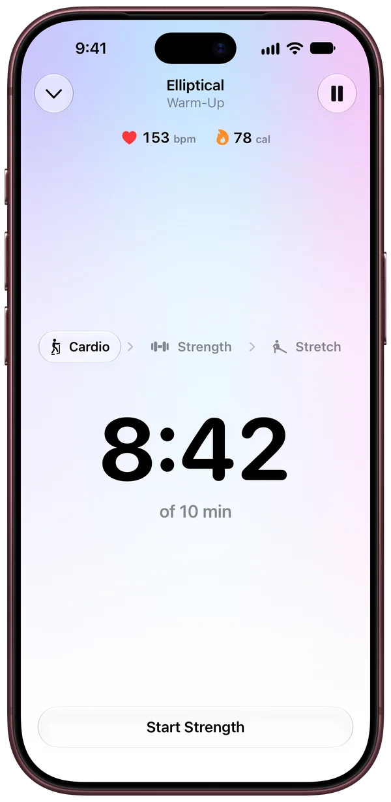
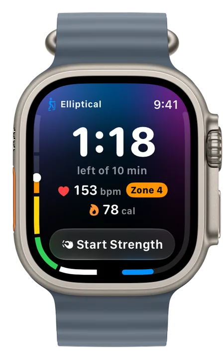
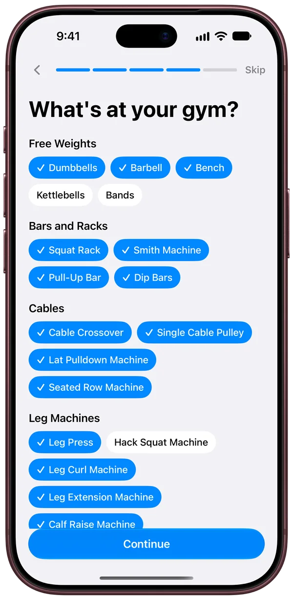
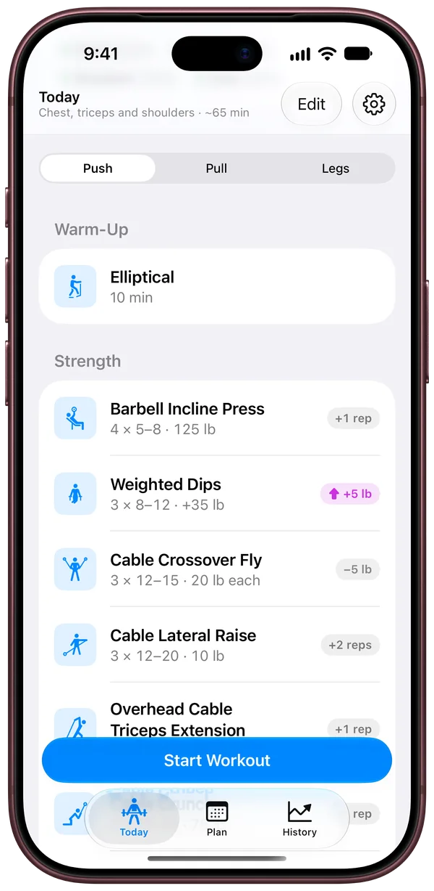
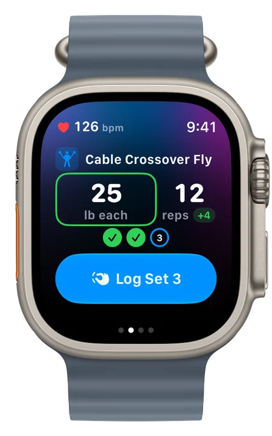
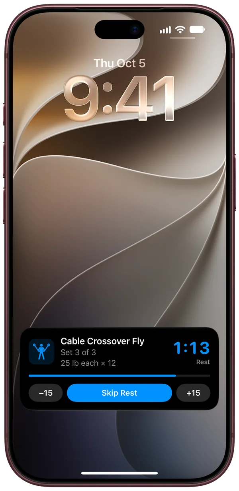
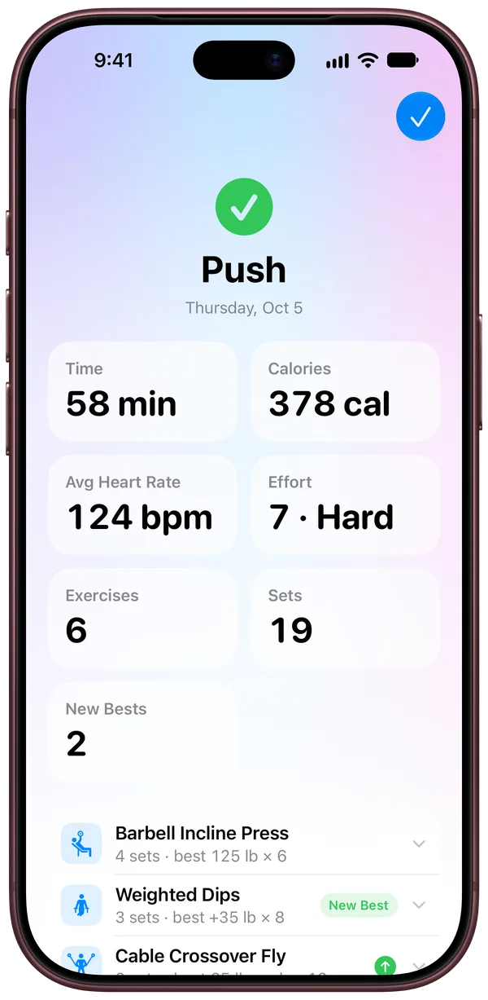
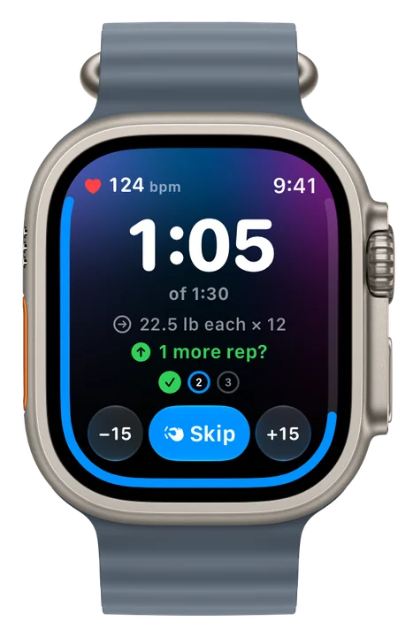
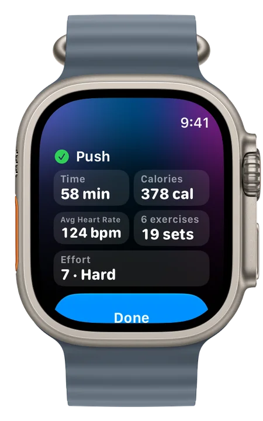

In development
FITTR
A better way to train.
FITTR plans every workout and shows your progress over time. Your Apple Watch handles the rest.


Plan. Train. Repeat.
-

Built around your gym. Pick the equipment you have. -

Your plan for today. Today’s workout, ready to start. -

Every set on your wrist. Log it with a tap. -

Workout at a glance. No need to unlock between sets. -

Stats from every workout. Time, calories, heart rate and your best sets. -

Watch yourself get stronger. Your progress over months.
Progress you can see.
FITTR shows how your training is trending. You’ll see when you’re getting stronger.
- Strength for the lifts in your plan
- Workouts and sets each week
- VO2 max from your Apple Watch
- Total volume
- Calories burned
Just lift.
-
The right weight every time
Suggested from what you did last time.
-
Up or down on every set
See right away how each set compares.
-
A trainer between sets
When to add a rep, add weight or go lighter.
-
Your watch runs the workout
Live heart rate and calories, and a tap when rest is up.


Start with a plan
Describe your goals
Apple Intelligence drafts a plan on your iPhone.
Paste a plan
From a coach, a PDF or any AI.
Ask your own AI
Plan with the AI you already use.
Start blank
Build each day yourself.
Syncs with iCloud and Apple Health.
Your watch saves every workout to Apple Health with its heart rate, calories and effort. Your workouts are there on your iPhone and Apple Watch with the rest of your health data.
Before you train, FITTR shows last night’s sleep, HRV and resting heart rate against your typical range.


Also in FITTR
Cardio, lifting and stretching in one workout
From the elliptical to your last stretch.
Warm-up sets worked out for you
Ease into every lift.
Swap a lift when the equipment is taken
Get a close alternative for the same muscles.
Import your Fitbod history
Every set you’ve logged comes with you.
Export to a spreadsheet, and back up everything
Open your workouts in any spreadsheet app.
Double tap to log a set
Log a set on Apple Watch without touching the screen.
Beat your best
FITTR cheers you on and celebrates every new record.
Rate your effort
Track how hard every workout felt.
Compare each set your way
Pick the comparison that motivates you.
Variations of a lift
Seated or standing, or two machines with the same name, each with its own weights.
Train to how you slept
Your workout fits the night you had.
Cool down your way
Stretch, do yoga, or take an easy walk or ride.
Your data stays yours.
No data collected
FITTR never stores your data.
No account
No sign-up and no password.
No ads or tracking
Nothing about you is sold or shared.
In development
FITTR
- Requires
- iPhone with iOS 27 or later, and Apple Watch with watchOS 27 or later
- Language
- English
- Account
- None
- Data collected
- None
- Developer
- NUTTR
- Help
- support@nuttr.co
Plans made from your goals need an iPhone with Apple Intelligence. FITTR isn’t affiliated with Fitbod.